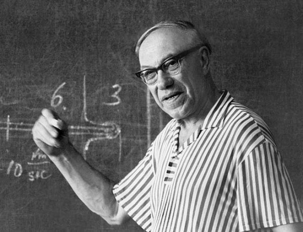
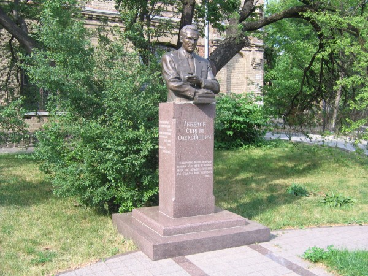
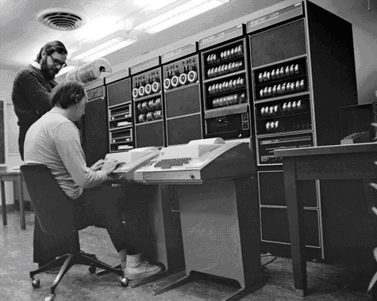

http://stalinism.ru/Stalin-i-gosudarstvo/Stalin-i-kibernetika.html
Александр Трубицын
Сталин и кибернетика
 Дураки
бывают разные. Нет, попрошу не вставать с места, пока вас не вызвали. (О.
Генри, «Клад»)
Дураки
бывают разные. Нет, попрошу не вставать с места, пока вас не вызвали. (О.
Генри, «Клад»)
Действительно, прав классик – разные бывают дураки. Но эта статья посвящена определенной их разновидности – а именно тем дуракам, которые высосав из чужого, пусть будет пальца, «факты» о «преследовании Сталиным кибернетики», шляются по общественным местам и пачкают их своими соплями и воплями. (Опять же, прошу не вставать с места, пока не вызвали: «сопли и вопли» – выражение вполне литературное, освященное именами Ильфа и Петрова, Булгакова, Олеши и прочих гудковцев).
«Определимся в дефинициях»
Едва ли сотая часть дураков, рыдающих о «преследовании кибернетики», хотя бы смутно догадывается о том, что же такое кибернетика и уверена, что это если не система бухгалтерского учета в кибуцах, то наверняка супруга невинно репрессированного выдающегося еврейского профессора Кибера, которого уже нет - из-за преследования Сталиным, конечно.
Сотая от сотой части, доползшая до диплома о высшем образовании, уверена, что научным «отцом кибернетики» является американец Винер. Извините, ошибочка вышла. От отношений Винера с наукой она ничего не родила, а если родила, то нечто совершенно иное. Потому что кибернетика, как открытие, научная идея, родилась за две тысячи лет до рождения Винера.
Термин «кибернетика» ввел древнегреческий ученый Платон как науку управления особыми объектами, имеющими в своем составе людей - эти объекты он называл «гиберно». Это могла быть и административная единица - земля, заселенная людьми, и корабль. По Платону, построенный и снаряженный корабль - это просто вещь, а вот корабль с экипажем - это уже «гиберно», которым должен управлять специалист - «кибернет», кормчий, по-русски. Если исходить из того, что человек - биологически, по крайней мере, то же животное, то становится ясным, откуда взялось название книги Винера «Кибернетика, или Управление и связь в животном и машине». Новое, как говорится, это хорошо забытое старое.
Кстати, обрусевшие слова «губернатор», «губерния», «гувернер» - все происходят от термина, который ввел Платон. Да и английское government - правительство, имеет тот же генезис.
Напомним, что кибернетикой - в исходном, платоновском смысле, в начале XIX века занимался Ампер, поместивший ее на третье место в своей классификации наук, а чуть позже него - блестящий польский ученый Болеслав Трентовский.
И если мы говорим о Сталине, то надо помнить, что он был совершенный, полный, идеальный кибернет - в платоновской формулировке. Потому что еще в те времена шел спор между Платоном и Аристотелем о форме правления: Аристотель считал, что управление государством должно строиться на основе законов, Платон оптимальным считал управление на основе решений кибернета (правителя). И теория, и опыт показали, кстати, что платоновский подход более эффективен.
Сталин был энциклопедически образованным человеком, работы Платона (в отличие от нынешних полуграмотных демиков), изучал, систему управления строил как кибернетическую, поэтому говорить о «преследовании Сталиным кибернетики» - просто абсурд.
Определяясь в том, что же такое кибернетика, хотелось бы сослаться на мнение академика Глушкова, блестящего ученого, математика, инженера, эрудита и интеллектуала, глубочайшего знатока не только технических и математических дисциплин, но трудов Гегеля и Ленина. Он не выдавал себя за «отца кибернетики», но его вклад в кибернетику - не винеровская медная лепта, а полновесная золотая литра. Так вот, Глушков трактовал кибернетику, как науку об общих закономерностях, принципах и методах обработки информации и управления сложными системами, при этом ЭВМ трактовалась как основное техническое средство кибернетики.
На определении Глушкова и остановимся. Напомню только, что созданное им семейство ЭВМ «МИР» опередило на двадцать лет американцев - это были прообразы персональных компьютеров. В 1967 году фирма IBM купила «МИР-1» на выставке в Лондоне: у IBM был спор о приоритете с конкурентами, и машина была куплена для того, чтобы доказать, что принцип ступенчатого микропрограммирования, запатентованный конкурентами в 1963 году, давным-давно известен русским и применяется в серийных машинах.
Кто понимает кибернетику лучше Глушкова и сделал для кибернетики больше - пусть дает свое определение этой науке.
Как Сталин «преследовал» кибернетику
|  |
|
М.А. Лаврентьев |
Если проехать от метро «Ленинский проспект» несколько остановок на троллейбусе, то по адресу Ленинский проспект, 51 можно увидеть утопающий в зелени деревьев типичный сталинский «дворец науки» - огромное здание с колоннами на фасаде. Это ИТМВТ, Институт точной механики и вычислительной техники имени С.А. Лебедева. Он создан в 1948 году для разработки электронных вычислительных машин - основного технического средства кибернетики, по определению Глушкова.
Директор Института математики и, по совместительству, вице-президент АН УССР Лаврентьев написал товарищу Сталину письмо о необходимости ускорения исследований в области вычислительной техники, о перспективах использования ЭВМ. Сталин, прекрасно ориентирующийся в перспективных направлениях науки, отреагировал немедленно: по его распоряжению был создан ИТМВТ и его директором был назначен М.А. Лаврентьев. Кстати, вот эту, сталинскую школу воспитания кадров широко использовал Королев. У него была чеканная, воистину сталинская формула: «Не согласен - критикуй, критикуешь - предлагай, предлагаешь - делай, делаешь - отвечай!». Так формировались кадры. Такое вот было «преследование кибернетики». А ведь страна еще не оправилась от тяжелейшей войны.
В том же 1948 году под началом доктора физико-математических наук С.А. Лебедева начинаются работы по созданию МЭСМ (малой электронной счетной машины) в Киеве.
В конце 1948 года сотрудники Энергетического института им. Крижижановского Брук и Рамеев получают авторское свидетельство на ЭВМ с общей шиной, а в 1950-1951 гг. создают ее. В этой машине впервые в мире вместо электронных ламп используются полупроводниковые (купроксные) диоды.
В начале 1949 года в Москве на базе завода САМ были созданы СКБ-245 и НИИ Счетмаш. В начале 50-х в Алма-Ате была создана лаборатория машинной и вычислительной математики.
Можно не сомневаться, что на самом деле делалось Сталиным для развития кибернетики намного больше - многое было засекречено, многое было забыто с годами и в соответствии указаниями "кукурузника" Хрущева, но и по этим фрагментам можно понять, что был запущен единый мощный кибернетический проект, охватывающий различные республики и научные учреждения.
И это речь идет только о цифровых ЭВМ - а ведь работа над аналоговыми машинами была начата еще до войны и в 1945 году первая в СССР аналоговая машина уже работала. До войны же были начаты исследования и разработки быстродействующих триггеров - основных элементов цифровых ЭВМ.
Для русофобов и антисоветчиков с особым удовольствием сообщаю, что триггер в 1918 году изобрел советский ученый М.А. Бонч-Бруевич.
Тот самый Михаил Александрович Бонч-Бруевич, который возглавил созданную по указанию В.И. Ленина Нижегородскую радиолабораторию (НРЛ). Это Бонч-Бруевичу направил В.И. Ленин свою знаменитую телеграмму: «Пользуюсь случаем, чтобы выразить Вам глубокую благодарность и сочувствие по поводу большой работы радиоизобретений, которую Вы делаете. Газета без бумаги и «без расстояний», которую Вы создаете, будет великим делом. Всяческое и всемерное содействие обещаю вам оказывать этой и подобным работам. С лучшими пожеланиями В. Ульянов (Ленин)».
Всяческое и всемерное содействие было оказано, и в условиях экономической и информационной блокады, которую организовали капиталисты, в Нижегородской радиолаборатории создавались приборы, опережавшие на годы западную техническую мысль. Кстати, именно там, в НРЛ, в самом начале 20-х годов советским специалистом Олегом Владимировичем Лосевым был создан «кристадин» - прообраз современного транзистора и открыто свечение полупроводниковых кристаллов - светодиодов.
 |
|
П.И. Паршин |
Возвращаясь к теме «преследования Сталиным кибернетики» хотелось бы привести еще пару примеров.
Министром машиностроения и приборостроения СССР Сталин назначил П.И. Паршина, прекрасного специалиста и знатока своего дела. И вот, когда на совещании в ИТМВТ один из руководителей лабораторий, Л.И. Гутенмахер, предложил строить ЭВМ на электромагнитных бесконтактных реле (они намного надежнее электронных ламп, хотя работают медленнее), Паршин тут же придумал увеличить силу тока в питающей обмотке реле - а это позволило сократить число витков в обмотке до одного, значит, сделать реле технологичным, приспособленным для массового производства. Вот так, в процессе совещания, делается важнейшее, принципиальное изобретение. Вот какие кадры занимались у Сталина кибернетикой. Можно ли вообразить, что какой-нибудь путинский министр настолько знает свое дело, что способен предложить революционное техническое решение? А у Сталина министры дело знали.
А второй пример - из секретного протокола закрытого ученого совета института электротехники и теплоэнергетики АН УССР от 8 января 1950 года, где с докладом о ходе работ над ЭВМ выступил создатель МЭСМ С.А. Лебедев. Доклад был встречен с интересом, доброжелательно, вопросы задавались толковые, все старались помочь и поддержать. Но среди присутствующих был и некий бдительный академик Швец. По сути проекта он не высказался - наверное, так ничего и не понял. Но «со всей остротой» поставил вопросы о том, Лебедев «не борется за приоритет АН УССР по этой работе», «комплексирование работы проводится недостаточно». А самое главное, указал, что «не следует использовать в применении к машине термин «логические операции», машина не может производить логических операций; лучше заменить этот термин другим».
Вот и вся история «преследования кибернетики». Обычные склоки и интриги среди ученой братии. Технари делали машины, двигали прогресс, а «философы», которые ничего не умели делать, бдительно бдили, чтобы кто не подумал, что машина может думать или хотя бы производить логические операции.
В результате «преследования кибернетики», в котором обвиняют Сталина, в СССР была создана новая мощная отрасль науки и техники, созданы научно-исследовательские институты и заводы, производящие кибернетические устройства. Созданы научные школы, подготовлены кадры, написаны учебники, в вузах начали читать новые дисциплины, готовить специалистов по кибернетике.
В СССР МЭСМ была запущена в то время, когда в Европе была только одна ЭВМ - английская ЭДСАК, запущенная на год раньше. Но процессор МЭСМ был намного мощнее за счет распараллеливания вычислительного процесса. Аналогичная ЭДСАК машина - ЦЭМ-1 - была принята в эксплуатацию в Институте атомной энергии в 1953 году - но также превосходила ЭДСАК по ряду параметров.
Разработанный лауреатом Сталинской премии, Героем социалистического труда С.А. Лебедевым принцип конвейерной обработки, когда потоки команд и операндов обрабатываются параллельно, применяется сейчас во всех ЭВМ в мире.
Построенная, как развитие МЭСМ новая ЭВМ БЭСМ в 1956 году стала лучшей в Европе. Созданный в Швейцарии Международный центр ядерных исследований пользовался для расчетов машинами БЭСМ. Во время советско-американского космического полета «Союз-Аполлон» советская сторона, пользующаяся БЭСМ-6, получала обработанные результаты телеметрической информации за минуту - на полчаса раньше, чем американская сторона.
В 1958 году была запущена в серию машина М-20, которая стала самой быстродействующей ЭВМ в мире, а также М-40 и М-50, ставшие «кибернетическим мозгом» советской противоракетной системы, созданной под руководством В.Г. Кисунько и сбившей в 1961 году реальную ракету - американцы смогли повторить это только через 23 года.
Специалисты-кибернетики сталинского призыва создавали мощнейшую вычислительную технику, все высшие достижения СССР в этой области связаны с их именами. Работали они по сталинским идеям - с опорой на собственные силы, свои идеи, свои ресурсы.
Катастрофой стало принятое в 1967 году решение руководства СССР перейти на «обезьянью политику» - копировать американскую вычислительную технику, запустить в производство машины IBM-360 под названием Единая Система «Ряд».
«А мы сделаем что-нибудь из «Ряда» вон выходящее!» - горько шутил С.А. Лебедев, один из первых руководителей сталинского ИТМВТ. И как он ни боролся за самобытный, лучший путь развития нашей вычислительной техники, то самое низкопоклонство перед западом, с которым упорно боролся Сталин одержало верх.
Это подорвало силы ученого, в 1974 году он умер. А ИТМВТ было присвоено его имя, имя лауреата Сталинской премии Сергея Алексеевича Лебедева.

Памятник Лебедеву в Киевском Политехническом
http://zadavi.livejournal.com/25430.html
Отставал ли СССР?
Пост с форума. Ссылка на тему в форуме и сам пост, к сожалению, рухнул после нападок на сайт.
Цитата:
Вспоминаются времена 50х годов, когда Виссарионыч почистил академию наук от еврейских фамилий. И все, чем годился СССР, было сделано именно в эти годы -- и спутники, и ракеты, на которых до сих пор летают, и бомбардировщики ТУ95, и атомный ледокол, и подлодки, и первые микросхемы тоже были нашими.
Никита привез в штаты приемнички на микросхеме -- американцы упали. А японцы тогда только что закупили патенты на обычные транзисторы, только учились еще. И ЭВМ тогда наши делали, на годы опережая американцев. Вот для примера то, что было на моих глазах.

Это 57 год. Это отображение памяти на экран -- то есть современный монитор. И барабан был с магнитной памятью -- прадедушка винчестера, и ОЗУ скидывали на барабан -- то, что сейчас свопом называется. И много чего, вплоть до программы, которая сейчас во всех японских калькуляторах, именно тогда и там была разработана.
Американцы тогда сильно напугались, и приложили немало сил и денег для возврата евреев в академию наук.
И всё. В 61 году (так называемая оттепель) евреи заняли свое место в академии -- на распределении финансирования. Разрабатывать нам машину дальше запретили -- якобы для экономии средств, а заставили повторять то, что сделано американцами. Вот так мы из головы превратились в хвост. А где бы мы могли быть сейчас?
Я не антисемит, не националист, но то, что было сделано руками евреев в науке -- это преступление. Кто-то из их родственников за границей постарался.
А вот американцы в 70м году. Деннис Ричи за машинкой с лампочками и печатью на выходе. Сравните с нашей 57 года с дисплеем и кучей других примочек:

А дело так было. Йоффе из богатой еврейской семьи, получил хорошее коммерческое заметь -- не физическое -- образование. После революции заведовал клубом при академии наук. Потом завхозом был, выдавал флаги и портреты на демонстации. Если помнишь "Карнавальную ночь" вот чисто -- Огурцов.
Вот с этого теплого места его Виссарионыч и турнул. И к полупроводникам и микросхемам в 50 годы он никакого отношения иметь не мог. Вот теперь вспомним -- что он был из богатой семьи. Плюс американские денежки -- и вот в 59 году удалось ему купить место -- завлаба полупроводников в академии. Лаборатория в академии это финансово-снабженческоя структура.
То есть распределение тем, денег, оборудования по разным НИИ. Вот теперь, если кому-то нужно было серьезное импортное оборудование для интересной работы -- тут Йоффе и становился "научным руководителем".
Вот так получился великий ученый, который дырку от электрона отличить не мог. Но финансирование самых передовых тем было прикрыто. Типа чего вы тут мелочевкой занимаетесь -- родине нужны большие полупроводники, чтоб самые большие в мире были.
А уж как ему достались американские денежки -- с инструкцией что надо делать, или просто понадеялись, что и так все развалит -- это, я думаю, когда нибудь вскроется.
http://www.computer-museum.ru/histussr/prioritet.htm
Забытые и утраченные отечественные приоритеты и рекорды
Первая в мире гибридная ИС
Первая в мире гибридная интегральная схема (ГИС) «Квант» (позже получившие обозначения ГИС серии 116) была разработана в 1962 г . в ленинградском НИИ Радиоэлектроники (НИИРЭ, позже НПО «Ленинец»), гл. конструктор А.Н. Пелипченко. Она же была первой в мире ГИС с двухуровневой интеграцией – в качестве активных элементов в ней использованы не дискретные бескорпусные транзисторы, а третья в мире полупроводниковая ИС «Р12-2» , разработанная и изготовленная в том же 1962 г . по заказу НИИРЭ Рижским заводом полупроводниковых приборов (РЗПП), гл. конструктор Ю.В. Осокин. ГИС производилась до середины 1990-х годов, т.е. более 30 лет.
Первая зарубежная ГИС была анонсирована ф. IBM , США в 1964 г. в виде STL -модулей , которые были созданы фирмой для нового семейства компьютеров IBM -360.
Первый в мире компьютер 3-го поколения
Первый в мире компьютер 3-го поколения (компьютер изготовленный на основе интегральных схем – ИС) разработан в 1963-64 гг. в ленинградском НИИ Радиоэлектроники (НИИРЭ, позже НПО «Ленинец»). Это бортовой авиационный компьютер «Гном», созданный на основе разработанных в НИИРЭ первых в мире гибридных интегральных схем «Квант» (позже ГИС серии 116).
Конкурентами компьютера «Гном» на первенство могут быть только компьютеры, которые в 1963-64 гг. могли быть разработаны на основе первых ИС ф. Fairlchaild или TI, но информацией о таких разработках Совет музея не располагает.
В совет музея поступила первая реакция на новый раздел «Забытые и утраченные отечественные приоритеты и рекорды» от Андрея Рубцова. В книге «В. Долкарт, Г. Новик, И. Колтыпин. „Микроминиатюрные аэрокосмические цифровые вычислительные машины“. — М.: „Советское Радио“, 1966» он нашёл информацию о более раннем компьютере 3-го поколения — о первой БЦВМ фирмы Texas Instruments, созданной в 1961 г. на основе серии SN 51. Вызывает сомнение не факт наличия такой машины, а то, что такая ЭВМ могла быть сделана в 1961 г. В октябре 1961 г. только анонсировала свои первые планарные ИС серии SN 51, времени на разработку и изготовлении машины не было, тем более для фирмы, ранее компьютеров не создававшей. Вероятно другое — ЭВМ сделана на «волосатых» ИС Килби «Type 502», которые TI в небольших объемах выпускала в 1959-1960 гг. и даже продавала. Для проверки работоспособности своих ИС, тогда вещи еще диковинной, TI была обречена сделать какое-либо устройство на них, вероятно, это и был описанный в книге компьютер. Время на его создание было. Но тогда это была интересная, но лабораторная поделка, за которой ничего не последовало. Об этом говорит и отсутствие в книге названия ЭВМ. Если это так, то учитывать ее нет никакого смысла, как никто не учитывает полупроводниковые триоды и транзитрон, сделанные до транзистора Бардина и Браттейна, и интегральные схемы, сделанные до Килби и Нойса.
Первый в мире компьютер миллионник
Первый в мире компьютер, производительность которого превысила 1 млн. оп/с разработан в 1960-1963 гг. в московском НИИ-37 (позже НИИ ДАР). Это экспериментальный компьютер второго поколения (на дискретных транзисторах) Т340-А с производительностью 2,4 млн. оп/с., (гл. конструктор Д.И. Юдицкий), ряд лет проработавший но полигоне ПРО. На его основе был разработан компьютер К340-А , выпущенный промышленностью в количестве около 50 комплектов. Высокая производительность компьютеров была достигнута благодаря применению модулярной арифметики .
Т340-А и К34-А остались мировыми рекордсменами производительными среди компьютерами второго поколения.
Первый в мире 16-разрядный бытовой компьютер
Первый в мире 16-разрядный бытовой компьютер (houm - computer) «Электроника НЦ-8010» разработан в зеленоградском НИИ Точной технологии (НИИТТ, ныне ОАО «Ангстрем»), гл. конструктор В.Л. Дшхунян. Компьютер создан на основе оригинальной 16-разрядной однокристальной микро-ЭВМ «Электроника НЦ-80Т» (БИС К1801ВЕ1 ) с оригинальной архитектурой и системой команд «Электроника НЦ», с тактовой частотой 8 МГц. После нескольких модификаций бытовой компьютер, но уже с PDP -11-совместимой архитектурой, освоен в производстве заводом «Экситон» (г. Павловский Посад Московской обл.) под названием «Электроника БК-0010», гл. конструктор от НИИТТ – А.Н. Полосин, гл. конструктор от з-да «Экситон» – С.М. Косенков. Это был первый в мире промышленный 16-разрядный бытовой компьютер.
Зарубежные houm-computer-ы тех лет выпускались на основе 8-разрядных микропроцессоров типов I 8080 (Intel), Z -80 (Zilog) и 6501 (MOS Technology) с тактовой частотой 1 МГц.
Первый в мире 16-разрядный КПК
Первый в мире 16-разрядный карманный персональный компьютер (КПК) «Электроника МК-85» с микропрограммной реализацией языка программирования «Basic» разработан в зеленоградском НИИ Точной технологии (НИИТТ, ныне ОАО «Ангстрем») в 1985 г., гл. конструктор Л.К. Минкин. КПК построен на основе специального оригинального 16-разрядного микропроцессора КА1013ВМ1, программно совместимого с персональными компьютерами типа ДВК и БК-0010 с PDP -11-совместимой архитектурой. Производился заводом «Ангстрем» с 1986 по 2000 гг.
Немногочисленные зарубежные КПК тех лет строились на основе 4- или 8-разрядных микропроцессоров.